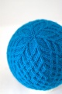

|
||
Premium Patterns Wintry Mix Mitts Love Bytes HawkeyeFree Patterns Kiddie Cadet Summerlin Ruffled Scarf Seamless DS Sock Simply Seamless Pouch Myriads of MushroomsExtras DIY Mitten Blocker Felt Patch Tutorial Yarn Dyeing Tutorial Needle Pouches Knitting Journal |
October 26, 2007 - Posted by Grace SchneblyFrosty Baby ShedirProject Specs Last weekend I finally got all of my Christmas presents finished for Jojo! To go along with her Baby Shrug, I made a baby sized Shedir stocking cap. I think it turned out so cute! I’ve liked Shedir hats for a long time, and when I ran across AnnyPurl’s version on Ravelry, I just knew I had to make one for my niece! This hat was a great stash busting project too because it used up my last skein of Knit Picks Merino Style left over from my Shetland Triangle shawl. I used about 100 yards from the skein, so I might save the last bits to make a Scrap-happy Celebration hat. The pattern mods are pretty easy to follow, but I thought it would be helpful to say exactly which rows I knit and which ones I skipped over. Start by CO 96 sts, work rows 1-6, 10-36, 53-71, 74, 77, 80, and 82. That’s basically it! Anny said that this pattern will fit babies ages 3-6 months. I think that it will be stretchy enough to fit Jojo at Christmas when she is 8 months old, and it will probably even fit her for a while longer than that. I can’t wait to have her try it on! :) I am lucky to have two adorable nieces to knit baby items for since I don’t have any kids of my own. The pattern itself was pretty easy to follow. I have been putting off making one for myself because whenever I looked at the cable chart I always got intimidated. However once I got into it and started knitting it wasn’t nearly as difficult as I thought! The only part of the pattern I was confused at was at Row 54 when the start of the row begins to migrate. It didn’t take that long to get the hang of though. All in all I really like the pattern; it’s definitely a classic and it seems like almost everyone has made one. The only thing I am not crazy about are the little holes created by the increases right after the ribbing. I don’t know if is just the way I did the increase that created a hole or what, but I may try a different type of increase next time when I make one of these hats for myself. If you’re planning on making a Shedir for yourself sometime the only real suggestion I have is to learn how to cable without a cable needle. It really makes things go so much faster!! |
   Recent ReviewsRecent Posts
 Our Favorites
|
| © 2007 KathrynIvy.com | ||
{kind=link}